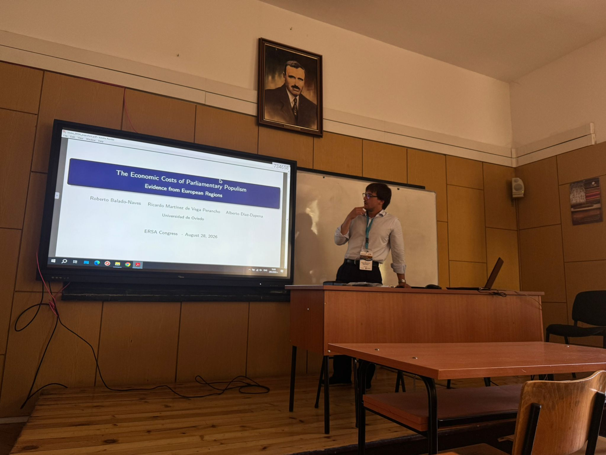

Ricardo Martínez de Vega Perancho
PhD Candidate in Economics — Universidad de Oviedo
I am a PhD candidate in the Department of Applied Economics at the Universidad de Oviedo, based in Asturias, Spain. My dissertation, Left-Behind Places: Identification, Causes and Consequences, supervised by Fernando Rubiera-Morollón and Alberto Díaz-Dapena, studies how declining and peripheral regions are identified and how they adjust — through housing markets, political behaviour, and the labour market — to economic and demographic shocks.
My work combines spatial and panel econometrics (system-GMM, instrumental variables, event-study designs) with NLP pipelines and large administrative datasets, using R and Python. I am currently a Senior Research Support Technician at the C_Innova-SEKUENS Chair for Innovation Analysis, and a research assistant on the ISABEL and EXIT projects at the Universidad de Oviedo.
Research interests
- Regional inequality and left-behind places
- Immigration and local housing markets
- Political economy of populism
- Labour-market effects of the green and digital transition
- Applied panel econometrics